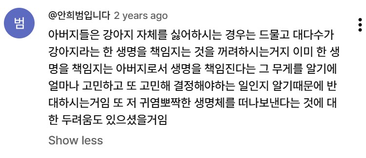
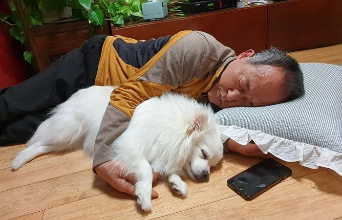
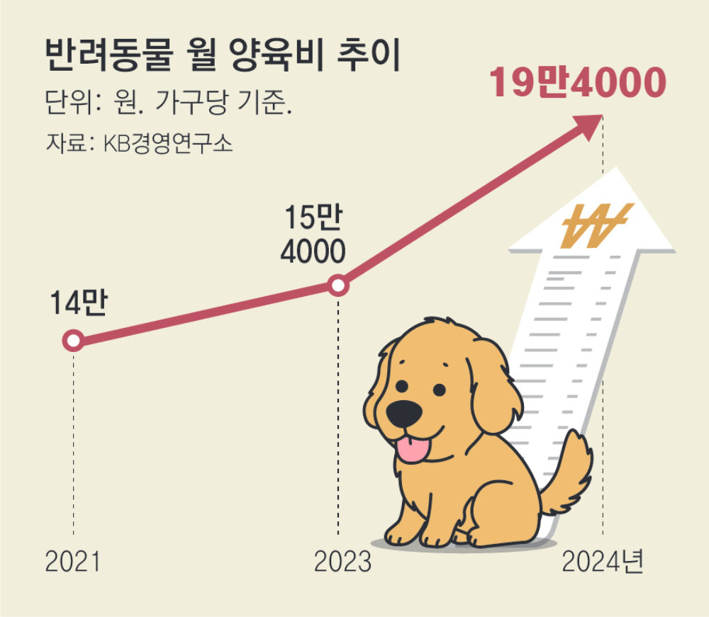
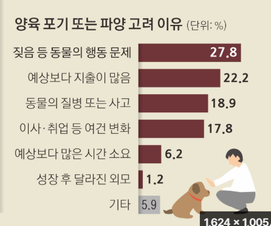

강아지라는 한 생명을 책임지는 것의 무게를 알기 때문임


왜냐면 생각보다 돈이 많이 나가거든

파양하는 이유 2위가 돈 때문임
강아지는 사랑입니다

강아지라는 한 생명을 책임지는 것의 무게를 알기 때문임


왜냐면 생각보다 돈이 많이 나가거든

파양하는 이유 2위가 돈 때문임
강아지는 사랑입니다
한번 무지개다리건널때까지 가족으로 지내보면안다 알고있어도 그이별을 받아들일수없는 무거움 진짜 그것때문에 다신못키움 살면서 그렇게 많이울어본적이없음 진짜로 무너져서 수의사다리붙들고 살려달라고빌음 가족을 떠나보낸 이별의아픔이 너무커서 몇년이지났어도 내핸드폰 배경화면은 살아생전댕댕이임 ..
60살 넘으신 시골에서 올라오신분들은 다들 개 한번은 키워보지않았을까
반려동물은 시간과 돈, 애정이 많이 들어